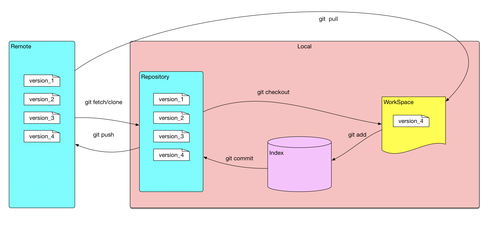
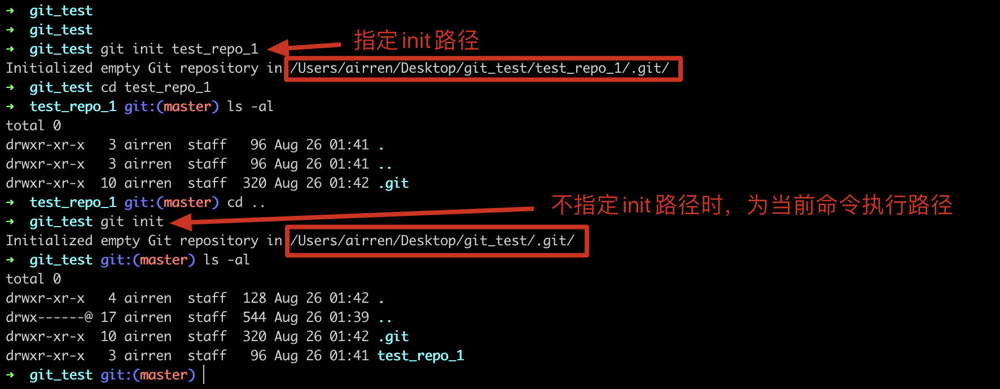
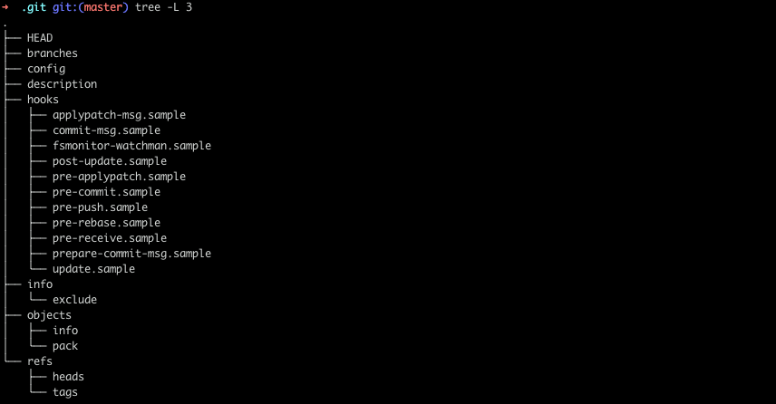
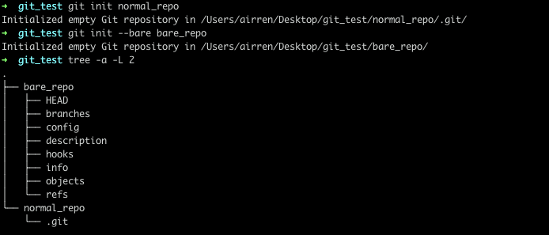
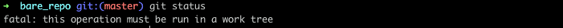
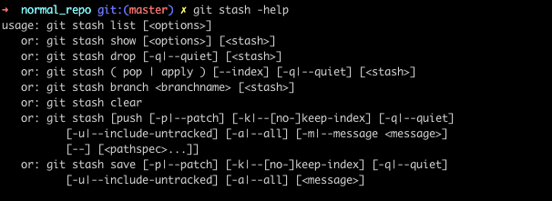

Airren Ren
Wednesday, August 26, 2020
「Git」 Git 工作区&暂存区&本地仓库&远程仓库以及基本操作

Git 数据存储的基本概念
WorkSpace: 工作区，编辑修改文件的区域
Index/Stage: 暂存区， 未提交修改
Repository： 本地仓库
Remote： 远程仓库
我们使用编辑器写代码的区域就是WorkSpace, 执行git add fileName之后，就将修改的文件提交到了暂存区，执行git commmit -m "update fineName" 之后就将修改提交到了本地版本库。最后使用 git push 将修改提交到远程仓库。
Git 常用操作
配置用户名以及邮箱
设置
1git config --global user.Name "name"
2git config --global user.email "xxx@outlook.com"
查看
1git config user.name
2git config user.email
初始化Git仓库 git init
1git init fileName
2# or 不指定路径，默认为当前路径
3git init

初始化仓库后，会生成一.git的隐藏文件夹

建立裸仓库
1git init --bare bare_repo

对比正常git仓库normal_repo与bare_repo的目录结构发现，在normal_repo/.git 文件夹中的文件直接出现在了bare_repo 中
切换分支。

在一个裸仓库中执行git命令会提示this operation must be run in a work tree。因为裸仓库是没有工作区的，只会记录git提交的历史信息，git log可以查看提交历史，但是没有办法进行版本回退或者切分分支的操作。
但是可以通过hooks建立一个单独存放源码的文件夹，将git仓库与项目源码分离存放。远程仓库往这个repo的推送更新会更新源码文件夹的内容。可以看一下这个技巧在Hexo部署中的实战.
切换branch
切换本地的branch
切换到远程branch 到本地
切换commit
多次commit合并为一个commit
1git rebase -i <commitId>
commitId是不需要被合并的一次commit， 是需要合并的commit的上一个commitId。
修改commit信息
修改历史commit信息：同上
修改最新的一次commit的信息
1git commit --amend "message"
rebase和merge的区别
git rebase 撤销
git –abort/–continue
1git reflog
2
3git reset --hard <commit id>
git stash 的使用
git stash用于临时保存和恢复修改, 可以跨分支
在未
add之前才能执行git stash

git stash [save] [message]
保存，save为可选项，message为本次保存的注释
git stash list
所有保存的记录列表
git stash pop stash@{num}
恢复，num是可选项，通过git stash list可查看具体值。只能恢复一次
git stash apply stash@{num}
恢复，num是可选项，通过git stash list可查看具体值。可回复多次
git stash drop stash@{num}
删除某个保存，num是可选项，通过git stash list可查看具体值
git stash clear
删除所有保存
1git branch -a # 查看所有的分支
2git branch # 查看当前使用分支(结果列表中前面标*号的表示当前使用分支)
3git checkout {$branchName} # 切换分支
1git config --global init.defaultBranch main
需要解决的问题
- git stash 是保存在了哪里
- git reset & git revert
- git rebase
- git init & git init -bare、
- 解决冲突
- git commit –amend
https://www.jianshu.com/p/699ed86028c2
https://www.liaoxuefeng.com/wiki/896043488029600/900004590234208
gitignore只能忽略未track的文件
Git 知识积累
https://zhuanlan.zhihu.com/p/147356242